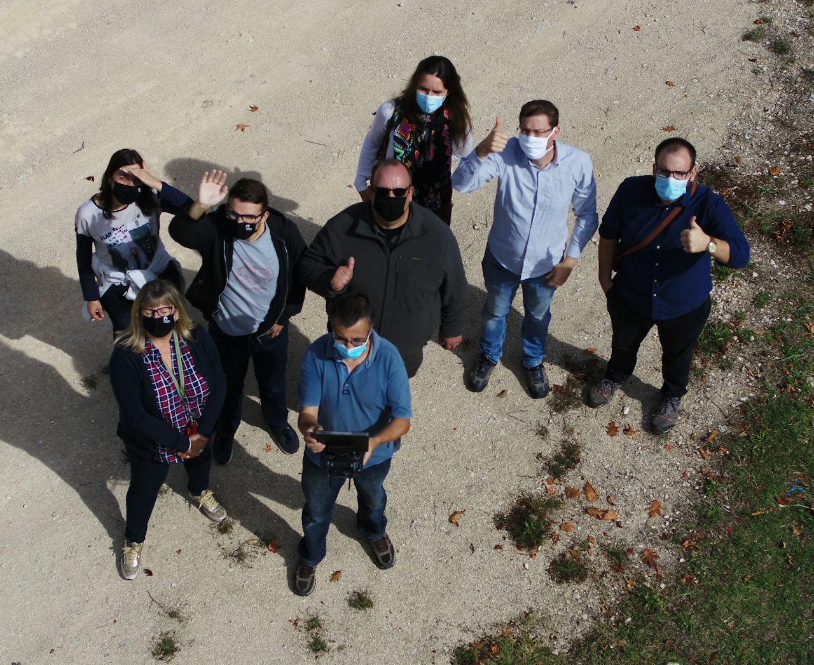
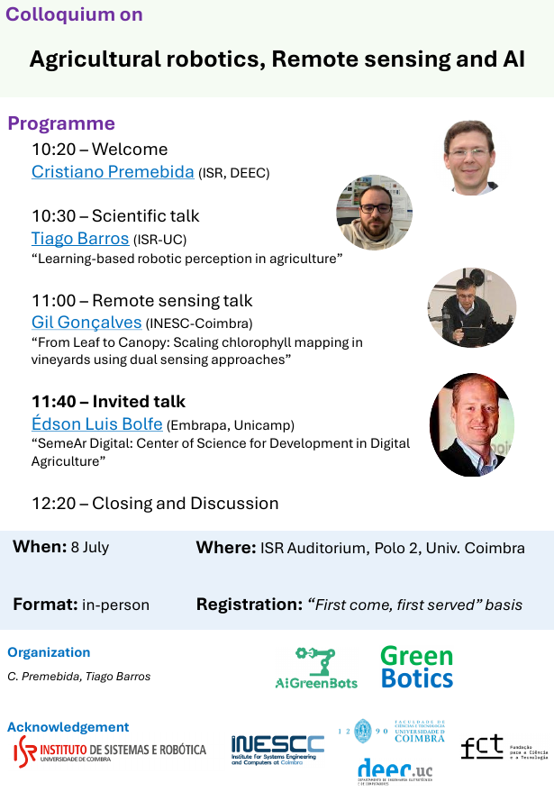
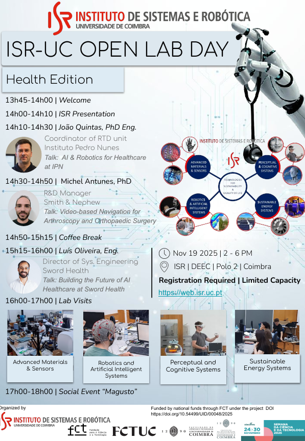
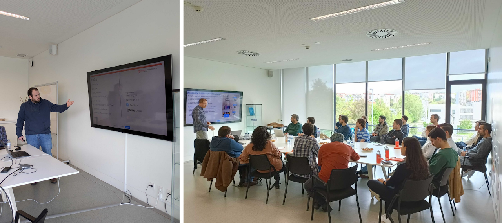
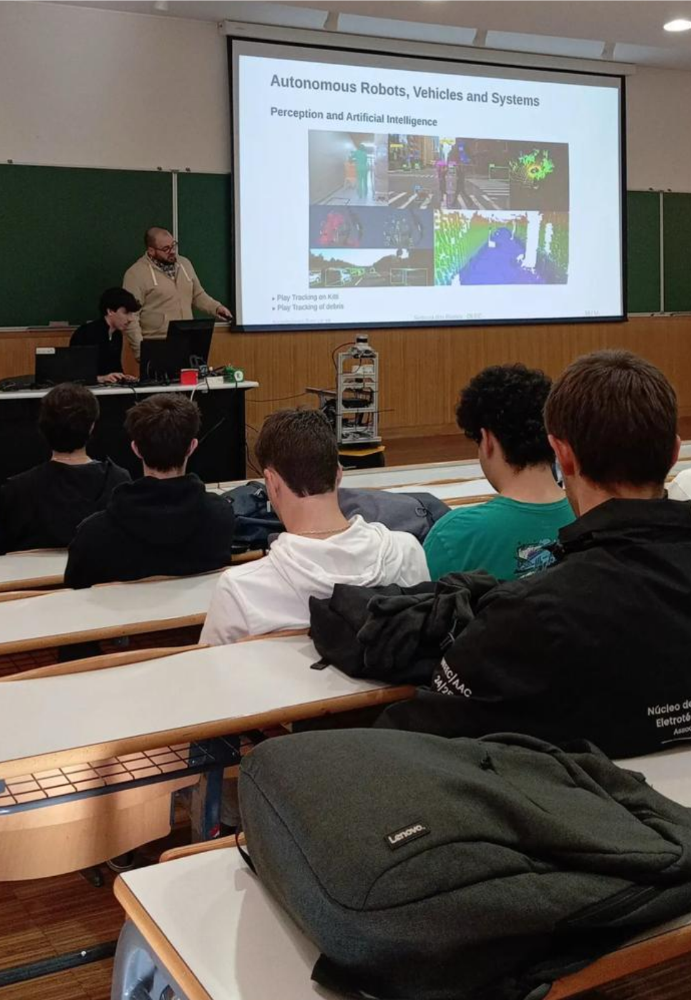

Tiago Barros, PhD, is a research scientist at the Institute of Systems and Robotics, University of Coimbra, Portugal. His research focuses on 3D perception with LiDAR, machine learning, localization, and mapping, with applications in both agricultural and urban environments. He has developed methods for place recognition, SLAM, and sensor fusion, as well as multimodal perception systems that integrate LiDAR, multispectral, and thermal imagery. His work has been published in leading conferences and journals, including ITSC, IROS, RA-L, and Computers and Electronics in Agriculture.
His research interests lie at the intersection of robotics, 3D perception, and machine learning.
E-mail: tiagobarros@isr.uc.pt
Recent News & Events
- Feb 2026 Honored to serve as Co-Chair of Local Arrangements of the 16th International Conference on Information Science and Technology (ICIST 2026), Coimbra, Portugal.
Publications
Journals
- T. Adão, J. Cerqueira, M. Adão, N. Silva, D. Pascoal, L. G. Magalhães, T. Barros, C. Premebida, U. J. Nunes, E. Peres, and R. Morais. "Promore: A procedural modeler of virtual rural environments with artificial dataset generation capabilities for remote sensing contexts." IEEE Access, 13:47632–47652, 2025.
- R. Pereira, T. Barros, L. Garrote, A. Lopes, and U. J. Nunes. "A Deep Learning-based Global and Segmentation-based Semantic Feature Fusion Approach for Indoor Scene Classification." Pattern Recognition Letters, 179:24–30, 2024.
- T. Barros, L. Garrote, P. Conde, M. J. Coombes, C. Liu, C. Premebida, and U. J. Nunes. "PointNetPGAP-SLC: A 3D LiDAR-Based Place Recognition Approach With Segment-Level Consistency Training for Mobile Robots in Horticulture." IEEE Robotics and Automation Letters, 9(11):10471-10478, 2024.
- T. Barros, P. Conde, G. Gonçalves, C. Premebida, M. Monteiro, C. S. S. Ferreira, and U. J. Nunes. "Multispectral vineyard segmentation: A Deep Learning Comparison Study." Computers and Electronics in Agriculture, 195:106782, 2022.
Conference Papers
- D. Oliveira, K. Mota, T. Barros, L Garrote, C. Premebida, and U. J. Nunes. "Multi-Stage Human Detection using YOLO to Prompt SAM2." 2025 8th Iberian Robotics Conference (ROBOT), Springer, 2025.
- M. Aleksandrov, K. Yordanova, E. Borges, D. Soares, T. Barros, and C. Premebida. "Safer and Trustworthier Navigation of Automated Vehicles." 2025 25th International Conference on Control Systems and Computer Science (CSCS), pp. 183-189, IEEE, 2025.
- W. Cardoso, T. Barros, G. Gonçalves, and C. Premebida. "A Probabilistic Framework Applied to Multispectral Image Segmentation." 2024 IEEE 3rd International Conference on Intelligent Reality (ICIR), pp. 1-2, IEEE, 2024.
- M. Aleksandrov, K. Yordanova, R. Borges, D. Soares, T. Barros, and C. Premebida. "Safer and Trustworthier Navigation of Automated Vehicles." 2025 25th International Conference on Control Systems and Computer Science (CSCS), pp. 183-189, IEEE, 2025.
- W. Cardoso, T. Barros, G. Gonçalves, C. Premebida, and U. J. Nunes. "Multispectral Image Segmentation in Agriculture: Evaluating Deep Learning Models with Train-Test Split and Cross-Validation Strategies." 2024 7th Iberian Robotics Conference (ROBOT), 2024.
- J. Jorge, T. Barros, C. Premebida, M. Aleksandrov, D. Goehring, and U. J. Nunes. "Impact of 3D LiDAR Resolution in Graph-based SLAM Approaches: A Comparative Study." 2024 7th Iberian Robotics Conference (ROBOT), 2024.
- T. Barros, C. Premebida, S. Aravecchia, C. Pradalier, and U. J. Nunes. "SPV-SoAP3D: A Second-order Average Pooling Approach to enhance 3D Place Recognition in Horticultural Environments." 2024 IEEE/RSJ International Conference on Intelligent Robots and Systems (IROS), 2024.
- T. Barros, L. Garrote, M. Aleksandrov, C. Premebida, and U. J. Nunes. "TReR: A Lightweight Transformer Re-ranking Approach For 3D LiDAR Place Recognition." 2023 IEEE 26th International Conference on Intelligent Transportation Systems (ITSC), 2023.
- N. Cunha, T. Barros, M. Reis, T. Marta, C. Premebida, and U. J. Nunes. "Multispectral Image Segmentation in Agriculture: A Comprehensive Study on Fusion Approaches." Robot 2023: Sixth Iberian Robotics Conference, 2023.
- P. Conde, T. Barros, C. Premebida, and U. J. Nunes. "ECE-based Deep Ensemble for Neural Network Calibration in Satellite Image Classification." 2023 IEEE International Conference on Autonomous Robot Systems and Competitions (ICARSC), 2023.
- T. Barros, L. Garrote, R. Pereira, C. Premebida, and U. J. Nunes. "Attdlnet: Attention-based Deep Network for 3D Lidar Place Recognition." Robot 2022: Fifth Iberian Robotics Conference: Advances in Robotics, 2022.
- R. Pereira, L. Garrote, T. Barros, A. Lopes, and U. J. Nunes. "A Deep Learning-based Indoor Scene Classification Approach Enhanced with Inter-object Distance Semantic Features." 2021 IEEE/RSJ International Conference on Intelligent Robots and Systems (IROS), 2021.
- J. NC Hayton, T. Barros, C. Premebida, M. J. Coombes, and U. J. Nunes. "CNN-based Human Detection Using a 3D LiDAR onboard a UAV." 2020 IEEE International Conference on Autonomous Robot Systems and Competitions (ICARSC), 2020.
- R. Pereira, T. Barros, L. Garrote, A. Lopes and U. J. Nunes. "An Experimental Study of the Accuracy vs Inference Speed of RGB-D Object Recognition in Mobile Robotics." 2020 29th IEEE International Conference on Robot and Human Interactive Communication (RO-MAN), 2020.
- R. Pereira, N. Gonçalves, L. Garrote, T. Barros, A. Lopes and U. J. Nunes. "Deep Learning based Global and Semantic Feature Fusion for Indoor Scene Classification." 2020 IEEE International Conference on Autonomous Robot Systems and Competitions (ICARSC), 2020.
- L. Garrote, D. Temporão, S. Temporão, R. Pereira, T. Barros, and U. J. Nunes. "Improving Local Motion Planning with a Reinforcement Learning Approach." 2020 IEEE International Conference on Autonomous Robot Systems and Competitions (ICARSC), 2020.
- T. Barros, L. Garrote, R. Pereira, C. Premebida, and U. J. Nunes. "Improving Localization by Learning Pole-like Landmarks using a Semi-supervised Approach." Robot 2019: Fourth Iberian Robotics Conference: Advances in Robotics, 2020.
- L. Garrote, M. Torres, T. Barros, J. Perdiz, C. Premebida, and U. J. Nunes. "Mobile robot localization with reinforcement learning map update decision aided by an absolute indoor positioning system." 2019 IEEE/RSJ International Conference on Intelligent Robots and Systems (IROS), 2019.
- R. Pereira, L. Garrote, T. Barros, C. Carona, L. C. Bento, U. J. Nunes. "Expressive Robotic Head for Human-Robot Interaction Studies." Mediterranean Conference on Medical and Biological Engineering and Computing, 2019.
- L. Garrote, T. Barros, R. Pereira, and U. J. Nunes. "Absolute Indoor Positioning-aided Laser-based Particle Filter localization with a refinement stage." IECON 2019-45th Annual Conference of the IEEE Industrial Electronics Society, 2019.
Preprints
- D. Mendonça, T. Barros, C. Premebida, and U. J. Nunes. "Seg2Track-SAM2: SAM2-based Multi-object Tracking and Segmentation for Zero-shot Generalization." arXiv preprint arXiv:2509.11772, 2025. (Under Review)
- R. Pereira, L. Garrote, T. Barros, A. Lopes, and U. J. Nunes. "Exploiting Object-based and Segmentation-based Semantic Features for Deep Learning-based Indoor Scene Classification." arXiv:2404.07739, 2024.
- P. Conde, T. Barros, R. L. Lopes, C. Premebida, and U. J. Nunes. "Approaching Test Time Augmentation in The Context of Uncertainty Calibration for Deep Neural Networks." arXiv:2304.05104, 2023.
- T. Barros, L. Garrote, P. Conde, M. J. Coombes, C. Liu, C. Premebida, and U. J. Nunes. "Orchnet: A Robust Global Feature Aggregation Approach for 3D LiDAR-based Place Recognition in Orchards." arXiv:2303.00477, 2023.
- T. Barros, R. Pereira, L. Garrote, C. Premebida, and U. J. Nunes. "Place Recognition Survey: An Update on Deep Learning Approaches." arXiv:2106.10458, 2021.
Projects
- PharmaRobot (2025-2028) — Co-PI, Researcher. Autonomous robot for hospital medication delivery, improving efficiency and safety. Reduces waiting times and enables more effective resource management in healthcare.
- VESTA (2024-2025) — Associate Team Member. Development of vegetation management tools based on Earth Observation data and AI for infrastructure management in transportation and energy sectors.
- XPro (2024-2026) — Associate Team Member. Probabilistic explainability of deep models for robot-critical applications including autonomous robot perception and self-driving vehicles.
- PPS18 (2022-2025) — Researcher. Intelligent warehouse management system based on automated mobile robot platform with natural navigation and multisensory localization.
- GreenBotics (2022-2025) — Researcher. Precision agriculture system integrating sensing, field robotics, and machine learning for soil-moisture monitoring in crop plantations (Maize M3Sys).
- AI Green - Intelligent Automation in Precise Agriculture (2022-2025) — Researcher. Development of precision agriculture solutions through multimodal spatio-temporal probabilistic inference framework, integrating machine learning, field robotics, drone and satellite sensing for crop plantation monitoring and anomaly detection.
- Multi-modal Perception for Long-term Localization (2022-2025) — FCT PhD Grant Beneficiary. Research on multimodal perception systems for human-centered robotics and long-term localization.
AI Green - Intelligent Automation in Precise Agriculture

Talks, Workshops & Poster Sessions
Dissemination of scientific results and outreach activities.
Speaker
Poster Presenter
Organizer & Conference Leadership




Collaborations
I actively collaborate with researchers at the following institutions:
- GeorgiaTech Lorraine (UMI2958 GT-CNRS, France) — DRAEAM Lab, Prof. Cédric Pradalier
- Loughborough University (United Kingdom) — LUCAS Lab, Prof. Cunjia Liu
- Freie Universität Berlin (Germany) — AutoNOMOS Lab, Prof. Daniel Göhring
- University of Minho (Portugal) — ALGORITMI Research Centre/LASI, Dr. Telmo Adão
- University of Coimbra (Portugal) — INESC, Prof. Gil Gonçalves